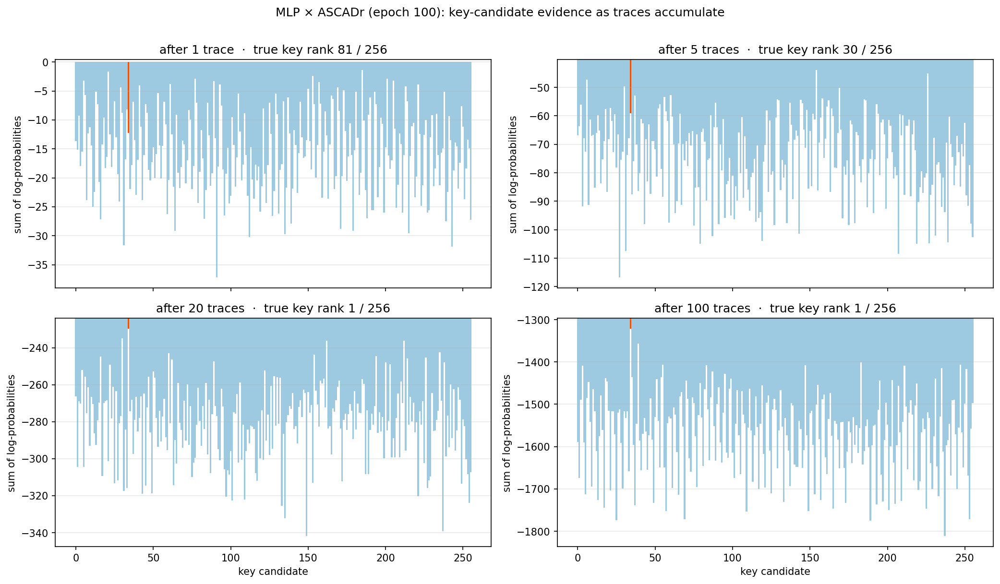

Chapter 7 — How a key byte is recovered
Chapter 6 left a trained network that maps a power trace to a probability distribution over intermediate values. This chapter turns those probabilities into a key byte. We use the finished ASCADr MLP (epoch-100 checkpoint) and the ASCADr attack set: traces the model has never seen.
This chapter defines attack success. It is not the climax of the project; it is the operational prerequisite for asking when and how that success emerged during training.
Reading order
- What is known and what is secret.
- How
yandkare tied by public algebra (exactyvs uncertainy). - Black-box softmax over
y, then one-trace tables: trace →P(y)→ votes onk. - Why many traces must be combined on the key-guess axis (product of votes, then sum of logs for numerics).
- Guessing entropy: mean rank of the true key (how to read the curve).
- The notebook that computes the figures.
1. What the attacker has
The attack assumes the plaintext is known. That is realistic for many devices (smart cards, authenticators, tokens): the input was sent in the clear, or the attacker chose it. The datasets of Chapter 4 store the plaintext next to every trace. The key never leaves the chip.
So the attacker has: the plaintext, a power recording of the encryption, and no direct access to the key. AES-128 has 16 key bytes; this study recovers byte index 2 only (see the datasets guide). The full key is sixteen independent recoveries of that kind.
2. How y and k are tied
AES-128 is a real block cipher (16-byte state, 10 rounds, public S-box). For this chapter, one first-round fact is enough. At the target byte position:
y = Sbox[p ⊕ k]
p— plaintext byte (known),k— key byte (secret),Sbox— public 256-entry table,y— intermediate value the network was trained to predict (identity leakage model).
Cipher detail (state layout, AddRoundKey, SubBytes, diffusion) and the same numbers live on the companion page:
Numbers for the ASCADr example
p = 0x8e (142), k = 0x22 (34)
x = p ⊕ k = 0xac = 172
y = Sbox[0xac] = 0x91 = 145
HW(y) = 3
HW(y) is the number of 1-bits in y (0x91 = 10010001₂). Some models
predict HW instead of the full byte; the attack logic below is the same idea.
The S-box is not a gentle map. Neighbours in the input can land far apart in the output (same public table the datasets use):
input x dec Sbox[x] = y dec HW(y)
────────────────────────────────────────────────
0x8e 142 0x19 25 3
0x8f 143 0x73 115 5 ← one bit from 0x8e
0xac 172 0x91 145 3
0xad 173 0x95 149 4 ← one bit from 0xac
0x71 113 0xa3 163 4
If y were known exactly
The S-box is a public bijection (Sbox⁻¹ exists). With exact y and known
p, the key byte is public algebra:
x = Sbox⁻¹[y]
k = p ⊕ x
Example: Sbox⁻¹[145] = 0xac, then 0x8e ⊕ 0xac = 0x22. No network needed.
What the trained network actually outputs
From a data-science view the epoch-100 MLP is a black box classifier.
It was trained to map a power trace to one of 256 classes: the possible
values of y. It was not trained to output a key byte. The last layer
is a softmax: 256 non-negative numbers that sum to 1 — a probability for
each possible y.
flowchart LR
T["power trace<br/>(2000 samples)"] --> N["trained MLP<br/>(black box)"]
N --> S["softmax<br/>P(y=0) … P(y=255)"]Hidden layers hold learned features; they are not labelled as y. The only
place y appears by design is as the training label (profiling) and as
this output distribution (attack).
One attack trace, three tables
The first ASCADr attack trace has plaintext byte p = 0x8e. The true key
byte on this dataset is k = 0x22, so the true intermediate is y = 145.
Below: a fragment of the scaled trace (same preprocessing as training),
a sparse view of the 256-class softmax, then the remapping to key guesses.
Rows marked … are omitted; the full vectors have length 2000 and 256.
Table A — input (trace fragment)
sample index scaled amplitude
─────────────────────────────────
0 0.216
1 0.229
2 −0.399
… …
500 −0.993
1000 −0.065
1500 −0.237
… …
1998 −1.842
1999 −1.644
Table B — network output (selected P(y))
y P(y) note
──────────────────────────────────────────────
20 0.194
25 ~10⁻⁶
46 0.058
115 ~10⁻⁷
145 ~10⁻⁶ ← true y (almost flat)
154 0.247 ← model's peak class
160 0.054
163 ~10⁻¹²
240 0.089
… …
(all 256 sum to 1)
The peak is y = 154 with probability ≈ 0.25 — not the true 145. Inverting
that peak with Sbox⁻¹ would give the wrong key. The attack never does
that.
Table C — same probabilities on key guesses (p = 0x8e fixed)
For each candidate g, public algebra gives y_g = Sbox[p ⊕ g]. The vote
for g is simply P(y_g) from Table B:
guess g y_g = Sbox[p⊕g] vote = P(y_g) note
────────────────────────────────────────────────────────────
0x00 25 ~10⁻⁶
0x01 115 ~10⁻⁷
0x22 145 ~10⁻⁶ ← true k
0xb9 154 0.247 ← best vote this trace
0xff 163 ~10⁻¹²
… … …
Table C is Table B with rows reordered by g (for fixed p the map
g ↔ y_g is a bijection). No second model. On this single trace the true
key’s vote is tiny (rank 81 of 256); the largest vote belongs to a wrong
guess. That is why one softmax is not a recovered key.
In code, the dataset precomputes every y_g for every attack plaintext as a
matrix of shape 256 × n_attack. It is only a lookup table for Table C’s
middle column.
3. One trace is not enough
The same numbers as a plot — top axis y, bottom axis g:

ASCADr is masked (Chapter 3): a single trace carries
Sbox[plaintext ⊕ key] ⊕ mask, randomized per encryption. Without the
mask, the network cannot name the unmasked y from one recording.
Over the first 500 attack traces the model’s best guess is right on only 4;
the true value receives about twice the uniform probability (0.0089 vs
0.0039). That is above chance, and it is not enough to call the key from one
shot. The next section combines many Table-C votes for the same secret k.
4. Accumulating votes across traces
Why not average many top panels?
The top panel’s horizontal axis is y. Each encryption uses a different
plaintext byte p, so the true
y = Sbox[p ⊕ k]
sits on a different class on almost every trace. Averaging those softmax vectors blurs peaks that were never aligned.
What stays fixed is the key byte. For every trace the attacker builds a
Table C (one vote per g) and combines those votes across traces.
Why combine votes at all?
Each Table-C vote is a weak clue: “how compatible is this power recording
with the story that the key byte is g?” One clue is noisy (masking). The
secret k does not change between encryptions, so the same g is on trial
in every trace. The attacker needs a rule that says how well the whole
set of recordings fits each story.
Why a product (not a sum of the raw probabilities)
Treat two traces as separate measurements. For a fixed guess g, write:
- A = “trace 0 looks compatible with
g” (model probability of the impliedy_gon that trace), - B = “trace 1 looks compatible with
g”.
The question for the attack is whether both recordings fit the same story. For independent events, that joint compatibility is the product:
P(A and B) = P(A) × P(B)
That is the only reason for the ×. Adding the raw probabilities would answer
a different question (mixing incompatible scales); averaging the top-panel
softmaxes would still mix different y classes across plaintexts.
Wrong guesses can look good on one unlucky trace and bad on the next: the
product shrinks fast when any factor is tiny. The true key tends to avoid
those near-zeros more often, so its product decays more slowly and pulls
ahead as n grows. The mathematics is bookkeeping for “many weak clues
about one fixed secret,” not a new model of the chip.
From product to sum of logs
A long product of numbers in (0, 1) underflows to 0 in floating point. The
logarithm turns multiplication into addition and does not change which g
wins (larger product ↔ larger sum of logs):
score(g) = P₀ × P₁ × … × Pₙ₋₁
evidence(g) = log P₀ + log P₁ + … + log Pₙ₋₁
evidence(g) is what the bar charts plot. Same ranking as the product;
safer arithmetic.
Toy comparison over two traces:
g with probs 0.02 and 0.05: product = 0.0010, evidence = log(0.02)+log(0.05) = −6.9
h with probs 0.01 and 0.20: product = 0.0020, evidence = log(0.01)+log(0.20) = −6.2
h leads after two traces (larger product) even though g won the second
vote alone. Consistency across traces beats a single lucky bar.
What that looks like as traces are added
Each panel below is evidence for all 256 key candidates after the first n
attack traces (fixed order). Orange is true key 0x22; the title is its
rank:

After one trace the true byte is lost in the pack (rank 81). After five it is at 30; after twenty it is already first. Same ranking after 1,000 traces:

One orange bar stands out (0x22: evidence −12,065 against −13,694 for the
best wrong candidate). The network still only named values; the key
ranking is built from the hypothesis table. Which traces are drawn changes
when rank 1 appears — hence the averaged metric next.
5. Guessing entropy
Rank first — the number already in the panel titles
In the progress figure, each title stated a rank: after one trace the true key was 81st among 256 candidates; after twenty it was 1st. Rank 1 means “highest evidence.” Rank 256 means “worst.” That single number is already the attack outcome for one fixed list of traces.
Why average — and what GE is
Which traces you pick changes that rank (a lucky batch reaches 1 sooner; an unlucky batch later). Guessing entropy (GE) is the mean rank of the true key, averaged over many random draws of the attack set:
- Shuffle / draw a random subset of attack traces.
- Accumulate log-evidence; read the true key’s rank (1…256).
- Repeat many times; average those ranks.
So GE is the same idea as the panel titles, with the “which traces?” noise averaged out. GE ≈ 128 is what you expect from a random ordering of 256 candidates (blind guessing). GE = 1 means that, on average, the true key is in first place — the operational definition of a successful key-byte recovery here.
How to read the figure

- Horizontal axis: how many attack traces enter the product / sum of logs (more clues).
- Vertical axis: mean rank of the true key among the 256 candidates (1 = first place, 256 = last). That average is GE. The scale is logarithmic so the drop from ~100 down to 1 stays visible.
- Grey dotted line (128): random-guessing baseline.
- Orange dashed line (1): “key recovered” — true byte ranked first on average.
- Blue curve: for this epoch-100 MLP on ASCADr, GE starts near the random baseline and falls to 1 within roughly the first hundred traces; from about trace 86 onward it stays at 1 out to 4,000.
The progress panels showed one fixed run climbing to rank 1 by twenty traces. The GE curve answers: on average, after how many measurements is the true byte first? About 86 here — that is the usual “how many traces do I need?” figure for this model and dataset.
6. Notebook and next question
The same steps are in the attack notebook (CPU, minutes; no training).
Everything above used the finished model — weights after epoch 100. The checkpoints of Chapter 6 also hold every earlier epoch. The next question is when, during those 100 epochs, this attack became possible.
← Previous: Chapter 6 — Training and checkpoints · Index · Next: How many traces →